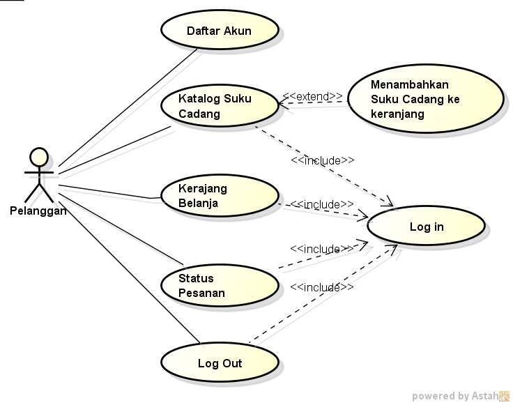

Nim: 1811500012
Nama: Michael Susento
Kelompok: TI6A
Hasil Saya Menyadur Peretemuan 4:
- Diagram Use Case Atau Use Case Diagram adalah Pemudodelan tang menggambarkan kegiatan sistem yang akan dibuat
, Use Case diagram Menggambarkan sebuah interaksi antara Satu atau lebih aktor(user) dengan sistem yang akan dibuat
- Diagram Use Case digunakan untuk Memahami Fungsi apa saja yang ada di dalam sebuah sistem dan siapa saja yang dapat menggunakan fungsi terebut
Hasil File Project Aasta Download
